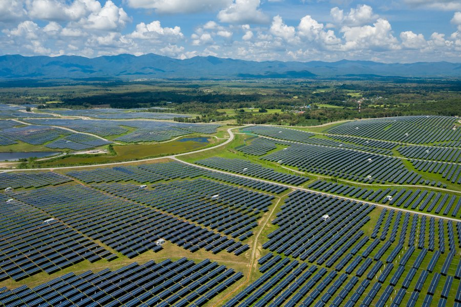
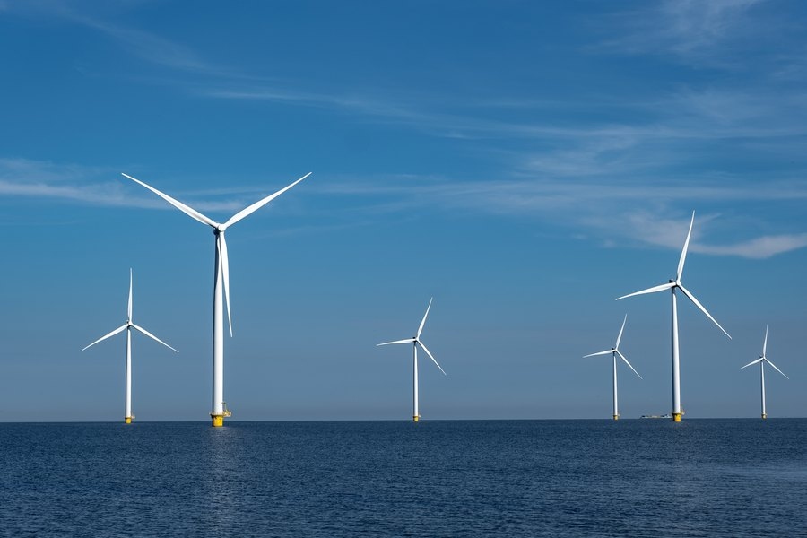
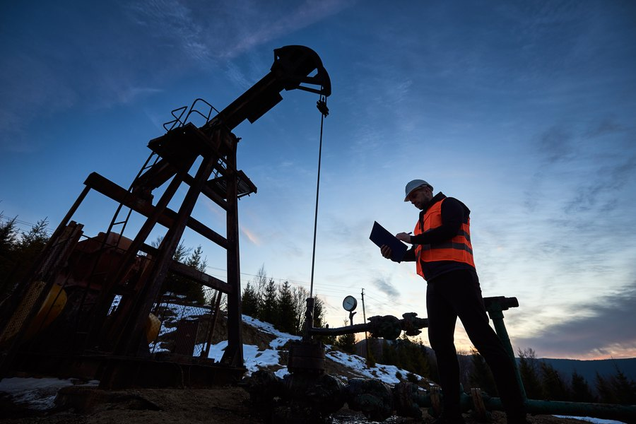

Térmica y a gas
Plantas de turbinas a gas en ciclo simple y ciclo combinado (OCGT / CCGT) y centrales de motores reciprocantes: logística de suministro de combustible, procura de turbinas y generadores, balance de planta y gestión del contrato EPC.
01 / LÍNEAS DE NEGOCIO
Infraestructura de generación de energía, petróleo y gas en sus tres niveles, cadena logística del trading de productos refinados, y agenciamiento y consultoría. En cada encargo estructuramos la operación, gestionamos los contratos y documentos y supervisamos a operadores terceros con licencia.
Estructuración técnica, procura de equipamiento crítico y gerencia de proyectos para generación eléctrica industrial y a escala de red. Acompañamos a propietarios de proyectos, desarrolladores e inversionistas institucionales en centrales térmicas y de ciclo combinado a gas, parques solares fotovoltaicos, complejos eólicos y sistemas de almacenamiento, coordinando la selección de fabricantes OEM, la logística de combustible y la contratación EPC hasta la puesta en marcha.
Entidades ejecutoras: Zenith Energy Group LLC
Plantas de turbinas a gas en ciclo simple y ciclo combinado (OCGT / CCGT) y centrales de motores reciprocantes: logística de suministro de combustible, procura de turbinas y generadores, balance de planta y gestión del contrato EPC.

Plantas solares fotovoltaicas en suelo a escala industrial y de red: evaluación de emplazamiento, procura de módulos e inversores centrales, equipamiento de subestación e interconexión eléctrica desde la factibilidad hasta la operación comercial.

Desarrollos eólicos en tierra y costa afuera: campañas de medición de recurso, contratos de suministro de aerogeneradores y torres, logística de transporte pesado marítimo y terrestre, y supervisión civil y eléctrica de balance de planta.

Procura técnica internacional, suministro de equipamiento de campo y coordinación operativa a lo largo de la cadena de valor de los hidrocarburos. Desde tubería de pozo (OCTG), válvulas y sistemas de superficie para campañas de perforación y producción, hasta capacidad de almacenamiento en terminales de terceros, transporte marítimo y suministro de productos refinados para distribuidores y consumidores industriales.
Entidades ejecutoras: Zenith Energy Group LLC; RINCONCD67 Consulting & Supply LLC

Soporte a exploración y producción. Procura de tubería de revestimiento y producción (OCTG), cabezales de pozo, válvulas de compuerta y bola de alta presión, sistemas de levantamiento artificial y servicios de campo para campañas de perforación y reacondicionamiento.

Almacenamiento a granel y transporte. Contratación de capacidad de tanques en terminales marítimas independientes, programación en ductos y transporte en buques tanque, siempre ejecutado con operadores terceros con licencia.

Refinación, equipamiento de proceso y distribución. Suministro de productos refinados para distribuidores mayoristas y consumidores industriales, junto con válvulas de alta presión, tubería y equipos de proceso para refinerías y plantas petroquímicas.

Ejecución operativa integral y coordinación documental para cargamentos a granel de diésel, gasolina, combustible de aviación (Jet A-1), fueloil y combustibles marinos. Estructuramos y supervisamos la cadena de suministro entre el puerto de carga y la terminal de descarga: nominación de almacenamiento y mezcla en terminales de terceros, fletamento de buques y transporte terrestre con porteadores licenciados, inspección independiente de cantidad y calidad, y control documental del embarque.
Entidades ejecutoras: Zenith Energy Group LLC

Representación comercial bajo mandato contractual y consultoría estratégica en las Américas, Europa y los principales corredores energéticos. Fabricantes de equipamiento industrial, comercializadores de productos refinados, marcas de franquicia de estaciones de servicio y contratistas de proyectos llave en mano nos designan para representar sus intereses ante compradores calificados e inversionistas institucionales, gestionando la calificación técnica, la negociación comercial y el cierre contractual.
Entidades ejecutoras: RINCONCD67 Consulting & Supply LLC; Zenith Energy Group LLC
Fabricantes de equipamiento industrial y comercializadores de combustibles nos designan bajo contratos de agenciamiento para posicionar sus líneas ante compradores calificados, estructurar ofertas técnico-comerciales y coordinar el cierre contractual.

Asesoría en entrada a nuevos mercados, estructuración de cadenas de suministro, procura técnica y factibilidad de proyectos para empresas de energía, servicios petroleros e infraestructura en las Américas y Europa.
Representación comercial de marcas de franquicia de estaciones de servicio y contratistas de proyectos industriales llave en mano (EPC) ante inversionistas calificados y operadores regionales de infraestructura.
MODALIDADES DE CONTRATACIÓN
Gestión focalizada en el eslabón específico que requiere el cliente: procura de equipos, almacenamiento en terminal, transporte marítimo, inspección independiente o una fase puntual de ingeniería.
Dirección integral del proyecto o coordinación completa de la cadena de suministro bajo un contrato marco de servicios, centralizando la supervisión técnica, la contratación de terceros y el control documental.
CICLO DE EJECUCIÓN
Cada empresa del grupo contrata en su propio nombre legal. Según la naturaleza del mandato, Zenith Energy Group LLC puede actuar como agente comercial por cuenta del cliente o como principal en nombre propio, conforme se estipule por escrito en el contrato firmado.
Zenith Energy Group LLC no posee ni opera plantas eléctricas, terminales de almacenamiento, buques ni flotas de transporte. Las operaciones físicas las ejecutan terceros con licencia contratados caso por caso.
Cada empresa es una persona jurídica distinta, con su propia administración, contratos y obligaciones. La referencia al grupo no implica responsabilidad solidaria. Las compañías aliadas son independientes y no forman parte del grupo.